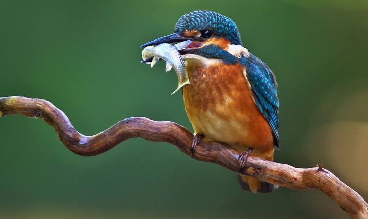

Kingfisher
Birds
Kingfishers or Alcedinidae are a family of small to medium-sized, brightly colored birds in the order Coraciiformes. They have a cosmopolitan distribution, with most species found in the tropical regions of Africa, Asia, and Oceania. The family contains 114 species and is divided into three subfamilies and 19 genera.
Scientific name: Alcedinidae
Family: Alcedinidae; Rafinesque, 1815
Order: Coraciiformes
Higher classification: Kingfisher
Mass: Common kingfisher: 31 g, Belted kingfisher: 150 g, MORE Encyclopedia of Life
Length: Common kingfisher: 17 cm, Belted kingfisher: 33 cm, Pied kingfisher: 25 – 29 cm, White-throated kingfisher: 19 – 21 cm
Kingfisher, any of about 90 species of birds in three families (Alcedinidae, Halcyonidae, and Cerylidae), noted for their spectacular dives into water. They are worldwide in distribution but are chiefly tropical.
Kingfishers, ranging in length from 10 to 42 cm (4 to 16.5 inches), have a large head, a long and massive bill, and a compact body. Their feet are small, and, with a few exceptions, the tail is short or medium-length. Most species have vivid plumage in bold patterns, and many are crested.
These vocal, colourful birds are renowned for their dramatic hunting techniques. Typically, the bird sits still, watching for movement from a favourite perch. Having sighted its quarry, it plunges into the water and catches the fish usually no deeper than 25 cm (10 inches) below the surface in its dagger-shaped bill.
With a swift downstroke of the wings, it bobs to the surface. It then takes the prey back to the perch and stuns the fish by beating it against the perch before swallowing it. Many species also eat crustaceans, amphibians, and reptiles.
The typical kingfishers (subfamily Alcedininae) are river dwellers, like the belted kingfisher (Megaceryle alcyon), the only widespread North American species. This handsome crested bird flies off over the water when disturbed, uttering a loud rattling call.
It is about 30 cm (12 inches) long and is bluish gray above and across the breast and white below. Only the females sport the brownish red band or “belt” across the lower breast. The male in its courtship ritual offers fish to the female as she perches.
After copulation the pair circle high overhead and chase each other while crying shrilly.
Stretching 43 cm (17 inches) long and weighing 465 grams (16 ounces), the largest of all kingfishers is the kookaburra, known throughout Australia for its laughing call.
The kookaburra’s white head has a brown eye stripe, the back and wings are dark brown, and the underparts are white. Often found in urban and suburban areas, it can become quite tame and may be fed by hand.
A member of the subfamily Daceloninae, the forest kingfishers, it captures insects, snails, frogs, reptiles, and small birds on the ground. It lives in family groups that roost together at night.
Biology of Kingfisher
Taxonomy, systematics and evolution
The kingfishers family Alcedinidae is in the order Coraciiformes, which also includes the motmots, bee-eaters, todies, rollers and ground-rollers.
The name of the family was introduced (as Alcedia) by the French polymath Constantine Samuel Rafinesque in 1815. It is divided into three subfamilies, the tree kingfishers (Halcyoninae), the river kingfishers (Alcedininae) and the water kingfishers (Cerylinae).
The name Daceloninae is sometimes used for the tree kingfisher subfamily but it was introduced by Charles Lucien Bonaparte in 1841 while Halcyoninae introduced by Nicholas Aylward Vigors in 1825 is earlier and has priority.
A few taxonomists elevate the three subfamilies to family status. In spite of the word "kingfisher" in their English vernacular names, many of these birds are not specialist fish-eaters; none of the species in Halcyoninae are.
The centre of kingfisher diversity is the Australasian region, but the group is not thought to have originated there. Instead, they originated in the Indomalayan region around 27 million years ago and invaded the Australasian region a number of times.
Fossil kingfishers have been described from Lower Eocene rocks in Wyoming and Middle Eocene rocks in Germany, around 30–40 million years ago. More recent fossil kingfishers have been described in the Miocene rocks of Australia (5–25 million years old).
Distribution and habitat
The kingfishers have a cosmopolitan distribution, occurring throughout the world's tropical and temperate regions. They are absent from the polar regions and some of the world's driest deserts. A number of species have reached islands groups, particularly those in the south and east Pacific Ocean.
The Old World tropics and Australasia are the core areas for this group. Europe and North America north of Mexico are very poorly represented, with only one common kingfisher (common kingfisher and belted kingfisher, respectively), and a couple of uncommon or very local species each:
(ringed kingfisher and green kingfisher in the southwestern United States, pied kingfisher and white-throated kingfisher in southeastern Europe).
The six species occurring in the Americas are four closely related green kingfishers in the genus Chloroceryle and two large crested kingfishers in the genus Megaceryle. Even tropical South America has only five species plus the wintering belted kingfisher. In comparison, the African country of the Gambia has eight resident species in its 120-by-20-mile (193 by 32 km) area.
Individual species may have massive ranges, like the common kingfisher, which ranges from Ireland across Europe, North Africa, and Asia as far as the Solomon Islands in Australasia, or the pied kingfisher, which has a widespread distribution across Africa and Asia.
Other species have much smaller ranges, particularly insular species which are endemic to single small islands. The Kofiau paradise kingfisher is restricted to the island of Kofiau off New Guinea.
Diet and feeding
Kingfishers feed on a wide variety of prey. They are most famous for hunting and eating fish, and some species do specialise in catching fish, but other species take crustaceans, frogs and other amphibians, annelid worms, molluscs, insects, spiders, centipedes, reptiles (including snakes), and even birds and mammals.
Individual species may specialise in a few items or take a wide variety of prey, and for species with large global distributions, different populations may have different diets.
Woodland and forest kingfishers take mainly insects, particularly grasshoppers, whereas the water kingfishers are more specialised in taking fish.
The red-backed kingfisher has been observed hammering into the mud nests of fairy martins to feed on their nestlings Kingfishers usually hunt from an exposed perch; when a prey item is observed, the kingfisher swoops down to snatch it, then returns to the perch.
Kingfishers of all three families beat larger prey on a perch to kill the prey and to dislodge or break protective spines and bones. Having beaten the prey, it is manipulated and then swallowed. Sometimes, a pellet of bones, scales and other indigestible debris is coughed up. The shovel-billed kookaburra uses its massive, wide bill as a shovel to dig for worms in soft mud.
Breeding
Kingfishers are territorial, some species defending their territories vigorously. They are generally monogamous, although cooperative breeding has been observed in some species and is quite common in others, for example the laughing kookaburra, where helpers aid the dominant breeding pair in raising the young.
Like all Coraciiformes, the kingfishers are cavity nesters as well as tree nesters, with most species nesting in holes dug in the ground. These holes are usually in earth banks on the sides of rivers, lakes or man-made ditches.
Some species may nest in holes in trees, the earth clinging to the roots of an uprooted tree, or arboreal nests of termites (termitarium). These termite nests are common in forest species.
The nests take the form of a small chamber at the end of a tunnel. Nest-digging duties are shared between the genders . During the initial excavations, the bird may fly at the chosen site with considerable force, and birds have injured themselves fatally while doing this.
The length of the tunnels varies by species and location; nests in termitariums are necessarily much shorter than those dug into the earth, and nests in harder substrates are shorter than those in soft soil or sand. The longest tunnels recorded are those of the giant kingfisher, which have been found to be 8.5 m (28 ft) long.
The eggs of kingfishers are invariably white. The typical clutch size varies by species; some of the very large and very small species lay as few as two eggs per clutch, whereas others may lay 10 eggs, the typical is around three to six eggs. Both sexes incubate the eggs. The offspring of the kingfisher usually stay with the parents for 3–4 months.
Status and conservation
A number of species are considered threatened by human activities and are in danger of extinction. The majority of these are forest species with limited distribution, particularly insular species.
They are threatened by habitat loss caused by forest clearance or degradation and in some cases by introduced species. The Marquesan kingfisher of French Polynesia is listed as critically endangered due to a combination of habitat loss and degradation caused by introduced cattle, and possibly due to predation by introduced species.